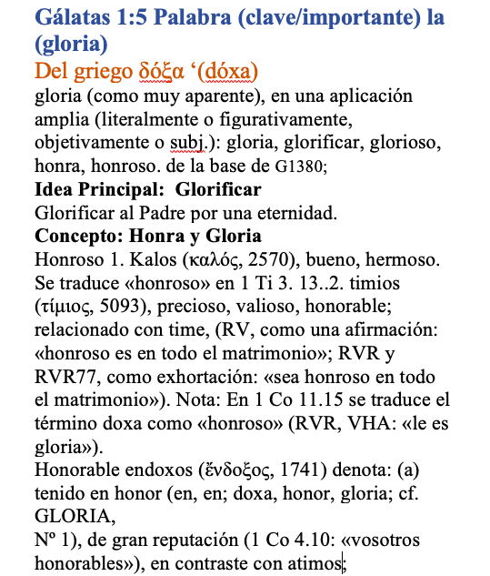
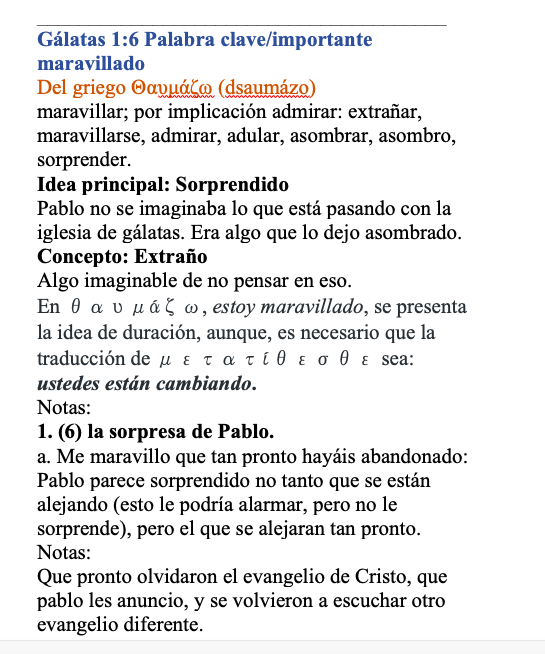
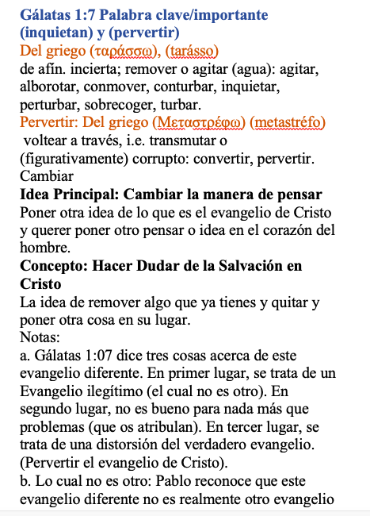
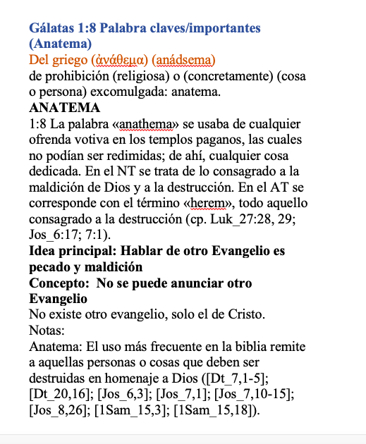
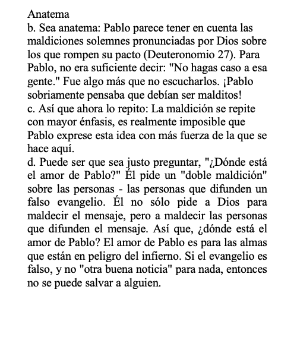
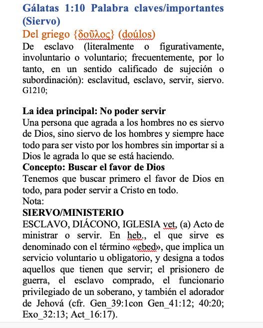
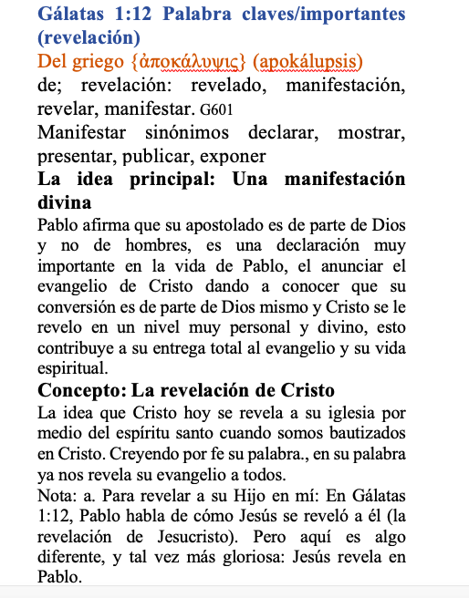
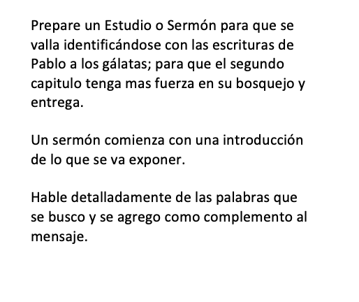
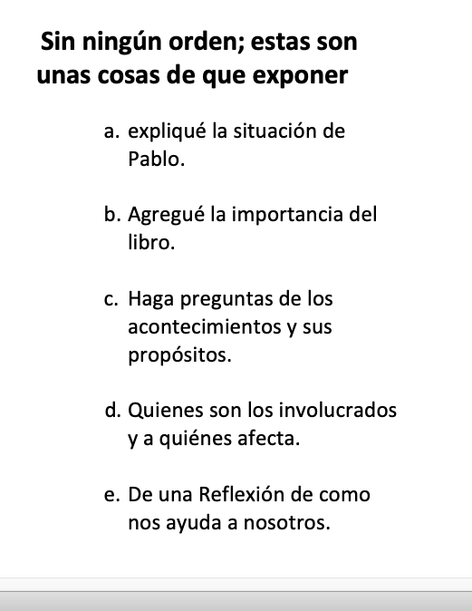

<


Feb. 2023
Palabras importantes
------------------------------------------







Sugerencia:


Aqui estan las palabras en griego y espanol, con su significado
De La Epístola de Gálatas Capítulo 1:1-24
________________________________________________________________
..........
Gál 1:3 Gracia y Paz
Gracia {Χάρις ( járis)}
Paz {εἰρήνη} {eirene}
Gracia: específicamente la influencia divina sobre el corazón, y
su reflejo en la vida; incluida gratitud): merecer aprobación, aprobar, congraciarte,
donativo, favor, gozo, gracia, gratitud, mérito.
....................................................................
Paz: probablemente de un verbo primario εἴρω eiro (unir); paz (literalmente o figurativamente);
por implicación prosperidad: paz.
..........
..........
..........
Gál 1:6 maravillado
{Θαυμάζω} /a>
(dsaumázo)
Del griego Θαυμάζω (dsaumázo)
maravillar; por implicación admirar: extrañar, maravillarse, admirar, adular, asombrar, asombro, sorprender.
Idea principal: Sorprendido
Pablo no se imaginaba lo que está pasando con la iglesia de gálatas. Era algo que lo dejo asombrado.
Concepto: Extraño
Algo imaginable de no pensar en eso.
En θαυμάζω, estoy maravillado, se presenta la idea de duración, aunque, es necesario que la traducción de μετατίθεσθε sea: ustedes están cambiando.
Notas:
1. (6) la sorpresa de Pablo.
a. Me maravillo que tan pronto hayáis abandonado: Pablo parece sorprendido no tanto que se están alejando (esto le podría alarmar, pero no le sorprende), pero el que se alejaran tan pronto.
..........
Gálatas 1:7 (inquietan) y (pervertir)
(ταράσσω),
(tarásso)
inquietan: Del griego (ταράσσω), (tarásso)
de afín. incierta; remover o agitar (agua): agitar, alborotar, conmover, conturbar, inquietar, perturbar, sobrecoger, turbar.
............................................................................
Pervertir: Del griego (Μεταστρέφω) (metastréfo)
voltear a través, i.e. transmutar o (figurativamente) corrupto: convertir, pervertir.
Cambiar
Idea Principal: Cambiar la manera de pensar
Poner otra idea de lo que es el evangelio de Cristo y querer poner otro pensar o idea en el corazón del hombre.
Concepto: Hacer Dudar de la Salvación en Cristo
La idea de remover algo que ya tienes y quitar y poner otra cosa en su lugar.
Notas:
a. Gálatas 1:07 dice tres cosas acerca de este evangelio diferente. En primer lugar, se trata de un Evangelio ilegítimo (el cual no es otro).
..........
Gál 1:8 anatema.
{ἀνάθεμα}
(anádsema)
(Anatema)
Del griego (ἀνάθεμα) (anádsema)
de prohibición (religiosa) o (concretamente) (cosa o persona) excomulgada: anatema.
ANATEMA
1:8 La palabra «anathema» se usaba de cualquier ofrenda votiva en los templos paganos, las cuales no podían ser redimidas; de ahí, cualquier cosa dedicada. En el NT se trata de lo consagrado a la maldición de Dios y a la destrucción. En el AT se corresponde con el término «herem», todo aquello consagrado a la destrucción (cp. Luk_27:28, 29; Jos_6:17; 7:1).
Idea principal: Hablar de otro Evangelio es pecado y maldición
Concepto: No se puede anunciar otro Evangelio
No existe otro evangelio, solo el de Cristo.
Notas:
Anatema: El uso más frecuente en la biblia remite a aquellas personas o cosas que deben ser destruidas en homenaje a Dios ([Dt_7,1-5]; [Dt_20,16]; [Jos_6,3]; [Jos_7,1]; [Jos_7,10-15]; [Jos_8,26]; [1Sam_15,3]; [1Sam_15,18]).
..........
Gál 1:10 siervo
{δοῦλος}
(doúlos)
(Siervo)
Del griego {δοῦλος} (doúlos)
De esclavo (literalmente o figurativamente, involuntario o voluntario; frecuentemente, por lo tanto, en un sentido calificado de sujeción o subordinación): esclavitud, esclavo, servir, siervo. G1210;
La idea principal: No poder servir
Una persona que agrada a los hombres no es siervo de Dios, sino siervo de los hombres y siempre hace todo para ser visto por los hombres sin importar si a Dios le agrada lo que se está haciendo.
Concepto: Buscar el favor de Dios
Tenemos que buscar primero el favor de Dios en todo, para poder servir a Cristo en todo.
Nota:
SIERVO/MINISTERIO
ESCLAVO, DIÁCONO, IGLESIA vet, (a) Acto de ministrar o servir. En heb., el que sirve es denominado con el término «ebed», que implica un servicio voluntario u obligatorio, y designa a todos aquellos que tienen que servir; el prisionero de guerra, el esclavo comprado, el funcionario privilegiado de un soberano, y también el adorador de Jehová (cfr. Gen_39:1con Gen_41:12; 40:20; Exo_32:13; Act_16:17).
..........
Gál. 1:12 revelación
{ἀποκάλυψις}
(apokálupsis)
(revelación)
Del griego {ἀποκάλυψις} (apokálupsis)
de; revelación: revelado, manifestación, revelar, manifestar. G601
Manifestar sinónimos declarar, mostrar, presentar, publicar, exponer
La idea principal: Una manifestación divina
Pablo afirma que su apostolado es de parte de Dios y no de hombres, es una declaración muy importante en la vida de Pablo, el anunciar el evangelio de Cristo dando a conocer que su conversión es de parte de Dios mismo y Cristo se le revelo en un nivel muy personal y divino, esto contribuye a su entrega total al evangelio y su vida espiritual.
Concepto: La revelación de Cristo
La idea que Cristo hoy se revela a su iglesia por medio del espíritu santo cuando somos bautizados en Cristo. Creyendo por fe su palabra., en su palabra ya nos revela su evangelio a todos.
Nota: a. Para revelar a su Hijo en mí: En Gálatas 1:12, Pablo habla de cómo Jesús se reveló a él (la revelación de Jesucristo). Pero aquí es algo diferente, y tal vez más gloriosa: Jesús revela en Pablo.
..........
Gálatas 1:1-12
Gálatas 1:1-12
Mas Referencias y conceptos e ideas del contexto
V1. R567 Al negar que el hombre tenga dominio sobre su apostolado, Pablo cubre la idea de fuente y agente, al usar ἀπό y διά.
V5. MT183 En vista del contexto debe introducirse un imperativo: sea gloria.
V6. R879 En θαυμάζω, estoy maravillado, se presenta la idea de duración, aunque, es necesario que la traducción de μετατίθεσθε sea: ustedes están cambiando.
BD306(4) Parece que algunas veces los adjetivos ἄλλος y ἕτερος se usan juntos sólo por motivo de variedad. En Gal_1:6 y sigs., parece que se usan sin distinción: ἄλλος se usa hasta cierto punto con sentido pleonástico para introducir εἰ μή …: no que haya algún otro, sino que … (comp. T197); la opinión de Blass parece que tiene apoyo en 1Co_12:9 y sigs., donde ciertamente no se puede encontrar ninguna diferencia real. Pero debo insistir en que hay una diferencia real en Gal_1:6 y sigs. Allí se cambia ἕτερον por ἄλλον en atención a la razón muy real de que Pablo no está dispuesto a admitir que ese evangelio esté en el mismo plano (ἄλλο) en que está el que predica él. El admite a ἔτερον pero rechaza a ἄλλο. El hecho de que Pablo usa εἰ μή estigmatiza el evangelio de los judaizantes como ἕτερον (v. 6) y al espíritu predicado por ellos, mientras que no está dispuesto a admitir otro (ἄλλον) Jesús, aun del mismo tipo que él predica -R747; Ramsay (en Gál. 1:6) sostiene que, cuando ἕτερος aparece en contraste con ἄλλος, no significa: diferente (como opina Lighfoot), sino que significa: otro del mismo tipo. [Editor. En vista de que la declaración positiva con ἕτερον cambia a una cláusula negativa con ἄλλον, hay una indicación de que ocurre alguna distinción entre los dos adjetivos: no que haya otro, es decir, otro verdadero evangelio. Pero uno no debe hacer más distinción de la que en realidad se expresa allí.]
V7. B274 Εἰ μή no afirma una condición cuyo cumplimiento determina que la apódosis es cierta, o la acción que ocurre, sino una limitación de la declaración principal. Sin embargo, εἰ μή nunca tiene en el N.T. el puro carácter adversativo (εἰ μή significa: sólo que, salvo que; comp. Act_20:23 -BD376).
M106n.1 En el v. 7 aparece un uso más bien curioso del artículo: οἱ ταράσσοντες, donde parece que lo que realmente se requiere es: οἱ ταράσσουσιν.
V8. R402 Cuando el sujeto comprende a dos o aun a las tres personas, la primera prevalece sobre la segunda y la tercera. Pero en Gal_1:8 sucede lo contrarío, bien porque Pablo sigue lo más cercano tanto en persona como en número, o porque así él reconoce la exaltación superior del ángel (es imposible abarcar ambos sujetos con εὐαγγελιζώμεθα -BD135[4]): nosotros o un ángel del cielo les predica.
R616 En los vv. 8 y sigs., παρʼ ὅ tiene la idea de más allá y así contrario a (otro diferente -M51).
R939 En el N.T., hay una fuerte inclinación a usar el imperativo en vez del optativo, no solo en peticiones, donde el imperativo también tiene un lugar legítimo en el griego clásico, sino del mismo modo en imprecaciones, donde toma el lugar del clásico optativo, como ἀνάθεμα ἔστω: sea maldito.
B278 En Gal_1:8, el cumplimiento del elemento de la prótasis expresado en παρʼ ὃ εὐηγγελισάμεθα es favorable al cumplimiento de la apódosis ἀνάθεμα ἔστω. La cláusula hasta este punto sólo expresa una cuarta parte de la condición. Pero el elemento expresado en ἡμεῖς ἢ ἄγγελος ἐξ οὐρανοῦ, que καί destaca, no es favorable para el cumplimiento de la apódosis, y así la cláusula resulta concesiva. Pudiera expresarse por medio de dos cláusulas, así: si alguien les predica cualquier otro evangelio diferente del que nosotros les predicamos, que sea anatema.
B285 Καὶ ἐάν introduce un caso extremo (de una cláusula concesiva), que usualmente se presenta como muy improbable.
V11. B13 El verbo γνωρίζω se usa como un aoristo de presente (comp. M7): deseo que ustedes sepan.
..........